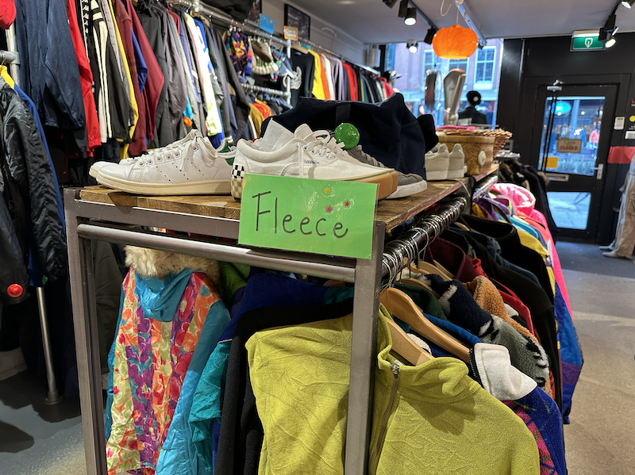
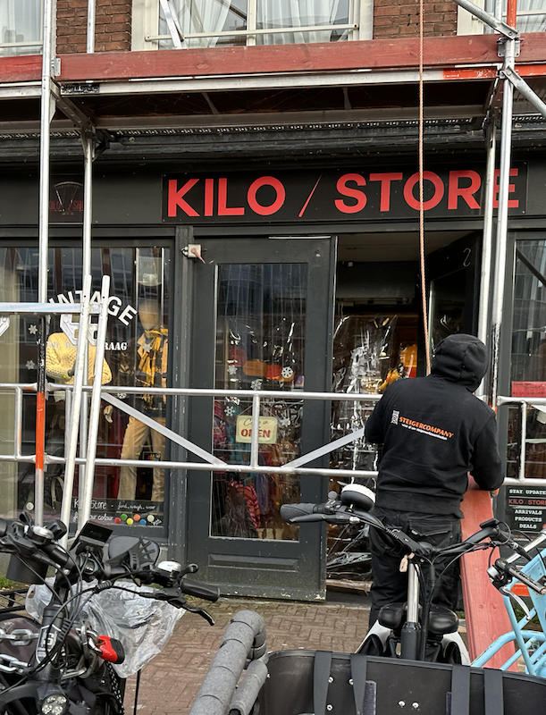

Blog
Duik in de wereld van vintage kleding!
De kleding die je draagt laat zien wie je daadwerkelijk bent, en waar kan je kleding vinden die bij je persoonlijkheid past? Uiteraard ben je bij de Kilo / Store op het juiste adres, dat vind ik dan in ieder geval, want wie wil nou niet mooie kleding, terwijl jij je steentje bijdraagt aan het milieu! Bij de Kilo / store geef je namelijk kleding een tweede kans. 
Passende mode
Bij de Kilo / Store vind je vast iets dat bij jou past, of het nou baggy of skinny is, noem het maar op! Er zal vast wel iets tussen zitten dat bij jouw eigen stijl past.
Tijdloze mode
Het leuke is dat de kleding wordt geïmporteerd uit verschillende landen, dit zorgt ervoor dat er kleding is van verschillende generaties. de kleding komt voornamelijk uit de jaren 60,70 en 80.